釣行日誌 ＮＺ編
NZ 2019-2020釣行 Vol - 1 He-dayさん 特別寄稿
まえがき
NZの林や草原に小型のネズミが多数発生し、マウス・フィーダーとなった鱒が巨大化するという、マウス・イヤー。私たちにとって初めてのマウス・イヤー、2009-10シーズンには、Me-You が74cm・14lbのモンスター・ブラウントラウトをキャッチしました。その年、He-Day がキャッチすることができたブラウン・トラウトの最大サイズは66cm・11lbで、「夢の70cm」には届きませんでした。
2回目のマウス・イヤー、2014-15シーズンには、Me-You と全く同じサイズの74cm・14lbの鱒を He-Day がキャッチ。5年越しの夢をかなえることができたのです。この鱒をキャッチした時、私たちは、この記録は “lifetime record” であり、“unbreakable” だと考えていました。
そして迎えた、2019-20シーズン。地元のフィッシング・ガイドの Martin は、フィッシング・シーズンが始まる6か月も前から、
「今度のシーズンは、マウス・イヤーとなる可能性が高い。ぜひとも再訪してほしい」
と熱心に誘っていました。その予想通り、マウス・イヤー・シーズンとなったのですが、12月に入って、Martin から
「天候が不順で大雨が降り、各地で洪水も起こっている」
というニュースが届きました。2019年12月下旬、私たちは胸中で期待と不安が交錯するのを感じながら、クライストチャーチ空港へ降り立ちました。
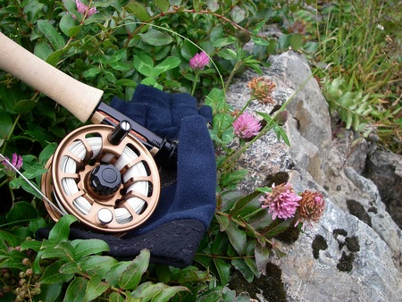
到着日
クライストチャーチ空港の到着ロビーから屋外へ通じるドアが開くと、私たちはまぶしい日差しと予想以上に涼しい風に包まれました。しばらく待っていると、空港のピックアップ・エリアへダーク・グレイのNISSAN X-TRAILが滑りこんできます。ドアを開けて大股に歩み寄ってきた Martin と握手を交わして再会を祝い、早速フィッシング・トリップのベースとなる町へ向かって出発しました。
車中で、Martin は翌日からの希望を尋ねてきました。
「安全策を取って数を狙える川へ行くか、それとも数は少ないけれど大物を狙える川へ行くか。どちらを選ぶ？」
He-Day は、大雨の影響で状況はあまりよくないと事前に聞かされていたことを思い出して一瞬躊躇した後、
「『チャレンジ』することが大切だと思う」
と答えました。
宿泊するモーテルへ到着すると、スーツ・ケースを部屋に入れ、スーパー・マーケットへ買い物に出かけます。前回と同じスーパー・マーケットですが、通りをはさんで隣接する敷地へ新築移転していました。店舗の面積はぐっと広くなり、店内の通路の幅も、日本の一般的なサイズより二回りほど大きいショッピング・カートが楽々とすれ違える広さになっています。今回も、数種類のハムやローステッド・サーモン、袋詰めのサラダ用生野菜、トマト、トースト用ブレッド、バター、ヨーグルト、ミルク、フルーツ・ジュースなどを購入しました。NZでは既にプラスチック・バッグ（いわゆるレジ袋）は禁止されているということで、紙製の丈夫なショッピング・バッグも購入します。
夕方になると、モーテルの近くのカフェ・レストランへ出かけました。わずか1年ほどでまたオーナーが変わったばかりでなく、10数年前からお馴染みだった店の名前まで変わっていることに驚かされました。ゆっくりと夕食を楽しんでカフェ・レストランを出ると、小雨交じりの冷たい風が吹きつけ、夏とは思えない肌寒さです。翌日は、午前4時起床、午前6時モーテル出発の予定。私たちは長旅の疲れに身を委ね、午後9時頃、眠りに落ちていきました。
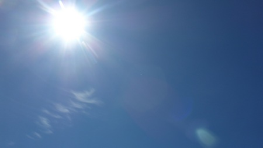
Day 1
フィッシング･トリップ初日。まだ辺りが暗い午前6時前に、Martin のX-TRAILがモーテルの駐車場へ滑り込んできました。挨拶を交わして、早速出発です。この日の天気予報は、晴天。鱒の姿を見つけやすいということで、サイト・フィッシングに適した平原を流れる川へ出かけることにしました。1時間ほどのドライヴで川沿いの空き地に到着すると、ランチやウォーター・ボトルをバック・パックに収め、ロッド・ソックスに入ったロッドを持って、下流へ向かって歩き始めます。吐く息が白く見えるほど冷え込んでいましたが、歩みの速い Martin の後を追って草原や川原を1時間も歩くと、体はすっかり汗ばんでしまいました。
この辺りでタックルのセット・アップをしようという Martin の助言で、バック・パックを下ろして9フィート・4ピースのロッドをつなぎ、リールを装着してラインを通しました。リーダーは9フィート・3X、先端にインディケーターを兼ねた大型のドライ・フライを結びます。タンやライト・ブラウン、グリーンなどのナチュラル・カラーのシンセティック・マテリアルを使って、カディス・スタイルに巻いたフライです。シルエットは大きめですが、フックはショート・シャンクの#14で、意外に小さいサイズ。インディケーター・ドライ・フライのフック・ベンドに 4Xのティペットを結び、ドロッパー・ニンフは #14ケースド・カディスを選択しました。
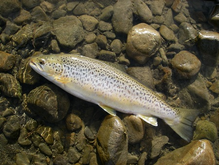
遡行を初めて間もなく、浅い瀬の中ほどに頭を出した、小さな島のような場所の脇でフィーディングしている鱒を Martin が見つけました。He-Day はそっと鱒の下流へ回り込み、至近距離からニンフを鱒の鼻先へ届けるべく、キャスティングを開始します。トップ・ガイドから出ているラインは3mほど。でも、鱒がフィーディングしている流れの筋へニンフを送り込むのはなかなか難しく、鱒の鼻先へは届いていないようです。ようやくインディケーター・ドライ・フライが沈み、反射的に合わせると、ティペットがブレイク。幸いなことに、フックが掛かったのは底石だったらしく、鱒は同じ場所でフィーディングを続けています。
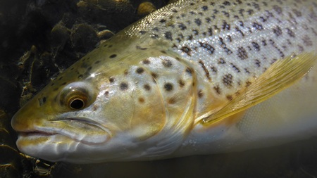
Martin は、新しいニンフを結びながら、
「至近距離の場合、素早く合わせることは大切だが、強く合わせてはいけない。『素早く、優しく』という合わせが大切だ」
とアドヴァイス。He-Day は１回深呼吸をして背筋を伸ばし、鱒の上流へフライをキャストします。きれいに流れに乗っていると思った次の瞬間、インディケーター・ドライ・フライがすっと沈みました。
素早く合わせると、しっかりとした手応え。フッキングと同時に鱒は水面を割ってジャンプし、自分から浅場へ乗り上げてしまいました。Martin が「油断するな。流れに戻って走り出すかもしれない」と警告を発しましたが、鱒はもう１回ジャンプして、さらに浅い身動きのできない場所へ “self-landing”。これには Martin も苦笑いしながら、少し水深のある浅場へ鱒をそっと横たえました。丸々とした体型と幼さの残る顔立ちから、あまり大きくは見えなかったのですが、それでもメジャーを当てると52cm。将来の再会が待ち遠しくなるような、美しい雌のブラウン・トラウトでした。
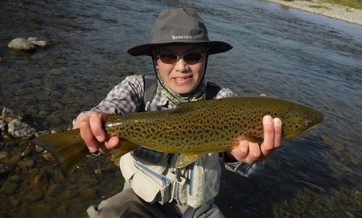
また鱒を探しながら玉石と玉砂利が混じった川原を30分ほど遡行したところで、先行していた Martin の足が止まりました。広い瀬の中をしばらく覗き込んだ後、振り返って両手を肩幅よりも大きく広げて見せます。お馴染みの、「大きな鱒を見つけた」というサイン。今度は、Me-You が狙う番です。
Martin の脇に立つと、浅い穏やかな流れの中に定位している鱒の姿がはっきりと確認できました。Me-You はゆっくりと下流に回り込み、流れに入って距離を詰めていきます。鱒の10数m下流から、キャスティングを開始。ニンフが沈むのに必要な距離を考慮すると、キャスティング距離が少し足りないようです。2mほど上流へ移動して、キャスティングを再開します。数投目に、インディケーター・ドライ・フライが沈みました。Me-You が素早くロッドを立てて、フッキング。鱒は上流へ向かって突進し、ジャンプを1回見せた後、今度は下流へ駆け下りました。Me-You も川原を走って追いかけます。
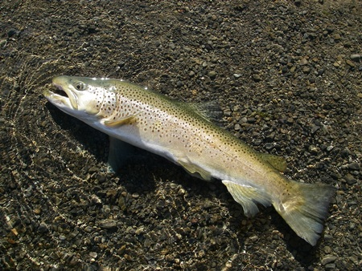
数分後、流れのゆるい浅場に身を横たえたのは、70cm・9lb、雄のブラウン・トラウト。いかつい風貌ながら、うっすらとパープルをにじませたメタリック・ブルーの頬が美しい輝きを放っていました。
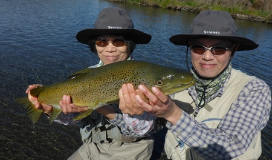
メタリック・ブルーの頬が美しい輝きを放っていた
この時点で、水温は10.8℃。朝の冷え込みの影響がまだ残っているようです。ただ、晴天のおかげで気温はぐんぐん上がり、歩いているとかなりの暑さを感じるようになりました。それから、1時間30分ほど、鱒の姿を見つけられない時間が続きました。時々、良さそうなポイントでブラインド・フィッシングを試みましたが、鱒の反応はありません。
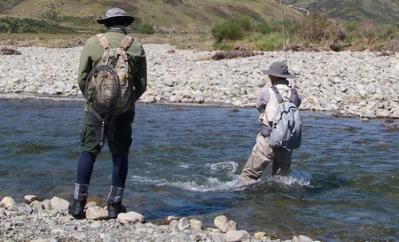
午前11時近くなって、ようやく水深のあるプールの流れ出し近くで、フィーディングしている2匹の鱒を見つけました。水深を考慮してニンフを重い#14タングステン・ビード・ヘッド・カディスに交換し、鱒の背後から He-Day がゆっくりと接近します。2匹のうち、下流側の鱒の方が少し大きそうに見えますが、2匹の距離が近いため、大きい方を狙って釣るというのはとても難しそうです。欲張った考えは捨てて、10mほど下流から鱒のフィーディング・レーンを狙ってフライをキャストしました。一瞬の後、鱒が素早く動くのが見え、インディケーター・ドライ・フライが沈みました。鱒は2・3回激しくジャンプした後、上流へ向かって走り始めましたが、すぐに方向転換して、下流へ向かって突っ走りました。
He-Day は、底が滑りやすい玉石の荒瀬を急いで対岸へ渡り、鱒を追いかけて川原を下流へ下ります。鱒は強烈な疾走を見せ、容易には止まりそうもありません。右手で懸命にロッドを支え、左手は逆転するリールのスプールを押さえたり、ラインが弛んだ時には懸命に巻いたり。そのうち、右腕には十分な力が入らなくなってきました。ティペットは、フロロカーボンの4X。前回、鱒との勝負が長引いて、振り切られた時と同じティペットです。
「これ以上、下流へ走られると、水中に沈んだブッシュに絡まれてトラブルを起こしてしまう。何とかして、鱒を止めなければいけない」
という Martin のアドヴァイスが耳に飛び込んできました。
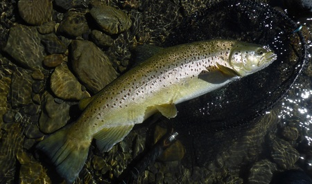
ようやく、鱒も突っ走る力を失ってきたようです。Martin は、水中に沈んだブッシュが待ち受けるプールの流れ込みに座り込み、ランディング・ネットを構えました。He-Day は、プールの流れ込みの少し上流に立ち、ショート・レンジで鱒との緊迫したやり取りを続けます。動きが止まり、流れの中でゆっくりと身を揺らすようになった鱒を、にじり寄った Martin がとうとうランディング・ネットに収めました。思わず安堵の声を漏らしながら、He-Day はロッドを下ろします。10数分の間ロッドを支え続けた右腕は、思うように動かせないほど疲れ切っていました。
Martin のランディング・ネットに収まったのは、67cm・11.5lb、雌のブラウン・トラウト。巨大な胴回りに対してアンバランスに感じるほど小さな頭と、優しい表情が印象的でした。鱒をそっとリリースする He-Day に向かって、Martin が
「ジャンプの後、鱒が下流へ走ってくれたのはラッキーだった。少し上流には、ブッシュが沈んでいた。鱒がもう少し上流へ走っていたら、多分トラブルを起こしていただろう」
と語りかけてきました。He-Day はそれを聞いて、幸運に感謝しながらうなずくばかりでした。
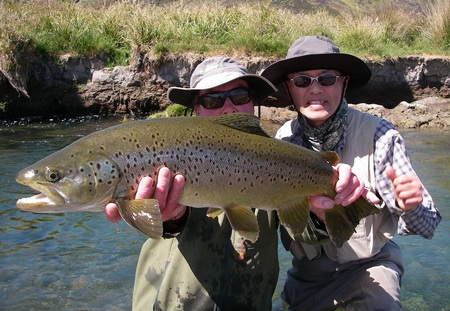
優しい表情が印象的
川原でのランチ・タイムの後、初日としては十分以上の結果が得られたということで、この日は“early finish”。満たされた気分で帰路のドライヴを楽しみます。車中では、
「Me-You の “longer fish” と He-Day の “heavier fish”、どちらを “bigger fish” と呼ぶべきか」
という幸せな話題で盛り上がりました。
「もちろん、NZでは He-Day の11.5lb。でも、日本なら、Me-You の70cm の方を望むフライ・フィッシャーもいるのではないか」
というのが Martin の意見でした。
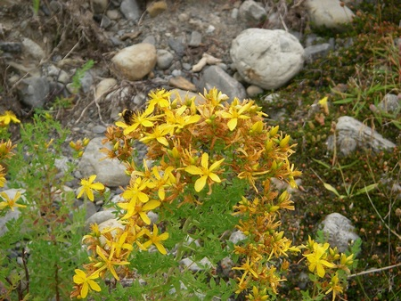
Day 2
フィッシング･トリップ2日目の天気予報は、曇り。光量が少ないと鱒の姿を見つけにくいため、ブラインド・フィッシングが可能なポイントの多い川へ出かけます。歩く距離が長くなるということで、午前5時にモーテルを出発しました。
川沿いのバンクを歩き始めたのは、午前6時10分。目的のエリアへ向かって30分ほど歩いた頃、Martin は、強い流れが岸沿いの岩場を穿ってできた深いプールへ慎重に近付いて行きました。そして、しばらくプールの中を覗き込んだ後、少し位置を替えてもう一度プールの水中を確認すると、振り返って両手を広げ、一言、“Monster !” と告げました。
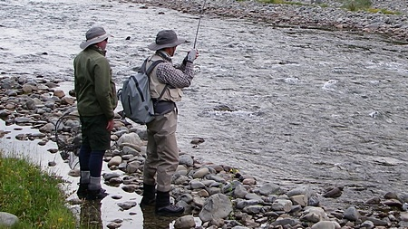
早速タックルをセット・アップして、リーダーにインディケーター・ドライ・フライを結びます。ニンフは、#14スウィミング・メイフライを選択しました。He-Day がプールの下流へ回り込み、水中へ入ってゆっくりと歩を進めます。鱒がフィーディングしているプールの最下流には、かなり大きな岩が水面から頭を出しているため、ある程度接近しても大丈夫そうな様子です。He-Day はプールの流れ込みから10mくらい下流で足場を確認し、キャスティングを開始しました。
1投目。インディケーター・ドライ・フライは、プールの流心をきれいに流れ下ってきます。“Good cast ! Again !” という Martin の声を耳にしながら、2投目。再びきれいに流れに乗ったインディケーター・ドライ・フライが、今度はすっと沈みました。
Martin の “Strike !” という声が響くのと同時に奮い立って合わせましたが、ロッドが立ちません。一瞬、根掛かりかと思わされるような手応えを感じさせた後、鱒はじりじりとラインを引き出し、上流の瀬へ上っていきました。鱒は流れの強い瀬の中へ入ると、水底に張り付いて動きません。He-Day は長期戦を覚悟してリールのドラグを少し締め込み、両腕でロッドを支えることにしました。6wtロッドはバットから大きく曲がったまま。鱒にプレッシャーをかけるためにロッドを下流へ倒しても、ロッドの曲がりがより深くなるばかりです。ティペットは、この日もフロロカーボンの4X。これ以上の無理はできそうもありません。
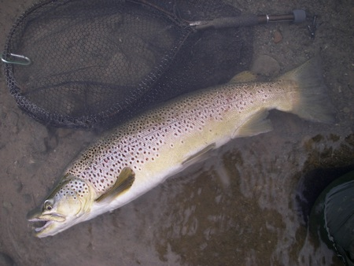
Martin は事態を打開すべく、「奥の手」を提案しました。拳大の丸石を鱒の近くへ投げ込み、鱒を刺激して動かそうというのです。リーダーや鱒に当たらないように、Martin が慎重に石を投げ始めました。数個の石を投げ込んだところで、ようやく鱒が瀬を下り始めたと思ったら、今度はリールから一気にラインを引き出しながら、プールを駆け下っていきます。He-Day は慌てて鱒を追いかけて川岸を走り、次の瀬へ下ろうとする鱒を何とか引き止めることができました。10分以上が経過した頃、とうとう鱒が疲れを見せ始めます。流れのゆるい浅場へ誘導したところで、Martin が慎重に鱒をランディング・ネットに収めてくれました。
He-Day と Me-You は、思わず歓声を上げ、ネットへ駆け寄りました。厳ついフック・ジョウと分厚く盛り上がった背、そして意外に優しい目元に目を奪われます。78cm・推定16lbの逞しい雄。ウェイ・ネットに内蔵された秤の最大目盛り14lbを振り切ってしまい、正確な重量の計測は不可能ということでした。
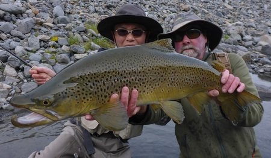
5年前、 74cm・14lbのブラウン・トラウトをキャッチして以来、He-Day は、これが自分にとっての “unbreakable”「ライフタイム・レコード」だと考えていました。ところが、今日、新たな「ライフタイム・レコード」が生まれ、あの記録は “breakable” だったということが明らかになったのです。He-Day が興奮気味にそう伝えると、Martin も興奮した口調で
「“beautiful” なキャスティング、ドリフト、そしてストライクだった」
と答えました。大きな鱒の雄姿を見送った後、He-Day と Martin は改めてしっかりと握手を交わし、喜びを噛みしめました。
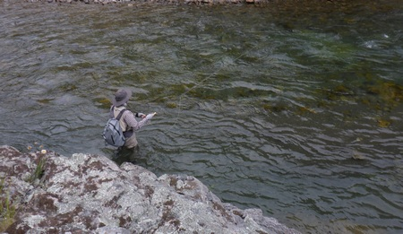
それからしばらくは、大きな鱒を見つけてもキャスティング態勢に入る前にいなくなったり、わずか数投でスプークされて逃げられたりという場面が続きました。そして、3時間近くが過ぎた頃、流れの幅が数mほどの支流が合流している場所へやってきました。
「この支流にも、良い魚がいる。しばらく遡行してみよう」
Martin はそう言うと、支流の川原を速足で歩き始めました。
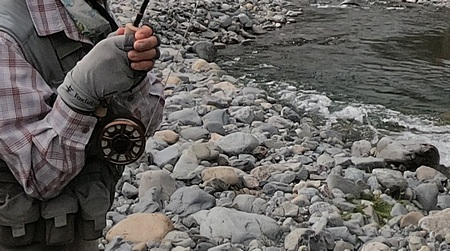
10分ほど上流へ向かって歩いたところで、Martin が大きな鱒を見つけました。瀬の中にできた小さな落ち込みで、白泡の切れ目に頭を突っ込むような感じで定位している大きな鱒が見えます。鱒の7mほど下流へ回り込んだ Me-You が、ショート・レンジのキャスティングで鱒の鼻先へニンフを送り込みます。数投目にインディケーター・ドライ・フライが水面から消え、Me-You の5wtロッドが大きく曲がりました。
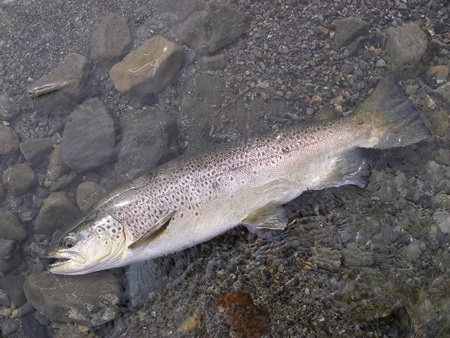
鱒は水面を割って分厚い体側を見せた後、激しい水飛沫を上げて暴れ続けます。その後、少し下流のプールまで一気に下り、小さなプールの中を縦横に駆け回りました。Martin の “Rod high !” という声が響き、Me-You はリールのドラグを少し締め込んで、ティペットを沈み石で擦られないよう、両腕で懸命にロッドを支えます。
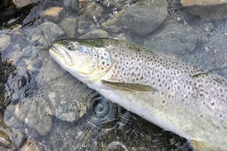
鱒が再び上流の瀬へ戻ってきたところで、ようやくランディング。大きな鱒が Martin のランディング・ネットに収まった瞬間、期せずして3人の歓喜の声が揃って川面を走り抜けました。うっすらと青紫を帯びた銀色に輝く巨大な体躯と小さな頭、そして優しい表情。72cm・12lbの美しいフィーメイル・ブラウン・トラウトでした。
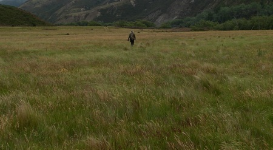
鱒が Me-You の手を離れて流れに戻るのを見届けると、この日も “early finish” を選択。川を後にして羊たちが踏み固めた小道を辿り、広い草原を横切ってパーキング・スペースへ向かいました。帰路の車中では、Martin が興奮を抑えきれない様子で、話し続けます。
「この2日間でキャッチした4匹の鱒のトータル・ウェイトは、少なく見積もっても47lbに達している。 Unbelievable !」
He-Day や Me-You も、望外の幸運に恵まれた喜びに浸りながら、幸福なドライヴの時間を楽しみました。
釣行日誌ＮＺ編 目次へ
サイトマップ
ホームへ
お問い合わせ